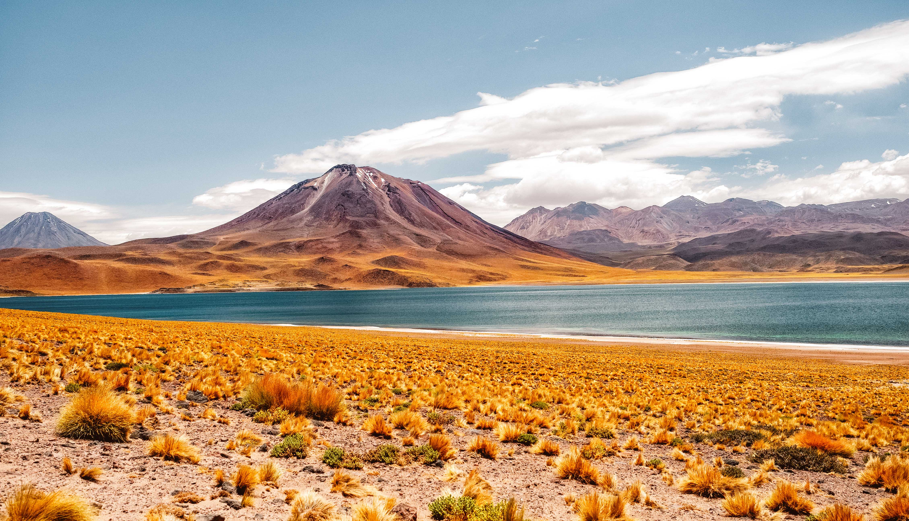
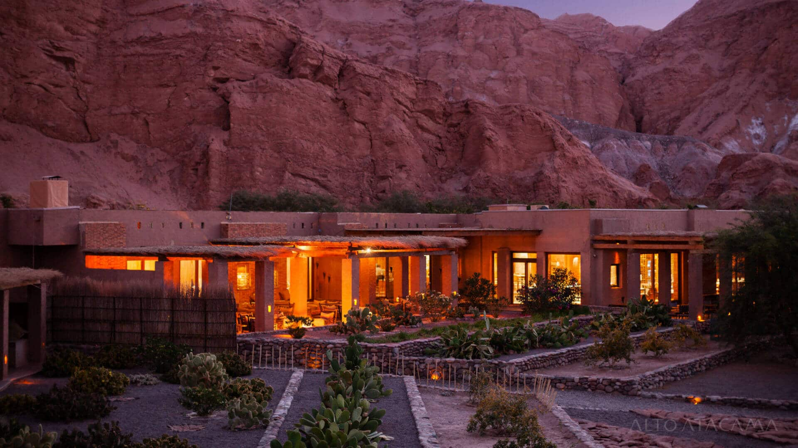

✨ Présentation
Vivez 5 nuits uniques dans le désert d’Atacama : paysages lunaires, lagunes multicolores, geysers impressionnants et nuits étoilées dans un hôtel d’exception. Un séjour parfait pour combiner aventure et émerveillement.
🏨 Hébergement d’exception

🌄 Hôtel unique – 5 nuits
- Chambres avec vue sur le désert et les montagnes
- Piscine et espaces détente
- Dîners gastronomiques inclus
- Service personnalisé et ambiance intimiste
🌌 Activités & Découvertes

💸 Tarif
2 450€ / personne
Vols non inclus – excursions et activités incluses Demander un devis personnalisé